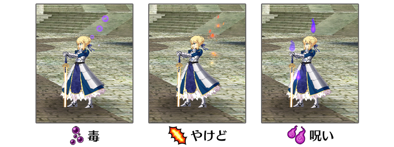
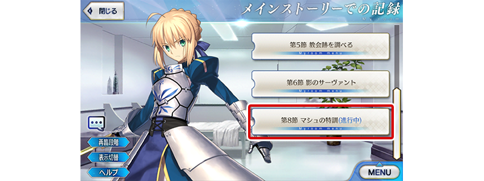
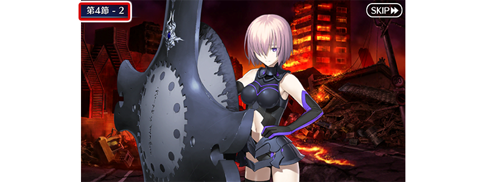

- 2/21
- 【來自迦勒底廣報局】關於2月的遊戲更新
非常感謝各位使用「Fate/Grand Order」。
來自迦勒底廣報局，告知關於預定2020年2月的下次遊戲更新。
以下介紹更新後反映的更新內容中，具有代表性的更新內容。
①關於一部份的狀態效果，修改成表示被賦予效果的演出會在戰鬥角色周圍顯示
為了變得更容易掌握戰鬥中的狀態效果，修改成表示「毒」「燒傷」「詛咒」效果的演出會在戰鬥角色周圍顯示。

※開發中畫面。
②主線劇情及幕間物語的文字冒險部份，修改成會根據進行度登錄到圖鑑(マテリアル) 目前為止，由數個進行度構成的主線劇情及幕間物語的關卡中，要通過關卡(通過所有的進行度)才會初次登錄劇情到圖鑑(マテリアル)，修改成就算沒通過關卡也會根據進行度過登錄劇情到圖鑑(マテリアル)。
因此，就算通過各關卡前，對應進行度的劇情變得可以在圖鑑(マテリアル)反覆閱讀。
※進行度中途為止登錄的劇情會在看板以藍色文字(進行中)顯示。

※開發中畫面。
③圖鑑(マテリアル)中SKIP時，修改成會顯示移動處的進行度 圖鑑(マテリアル)中在文字冒險部份播放中進行SKIP的情況，變得會在畫面顯示左上SKIP處的劇情進行度。

※開發中畫面。
以上為預定2020年2月實施的下次遊戲更新主要內容。
另外今後，也預定在期間限定活動和期間限定宣傳活動中，會有將通過主線關卡設為開放條件的情況。
無論如何，如果推進主線關卡的攻略會有所幫助。
今後也請多多指教「Fate/Grand Order」。